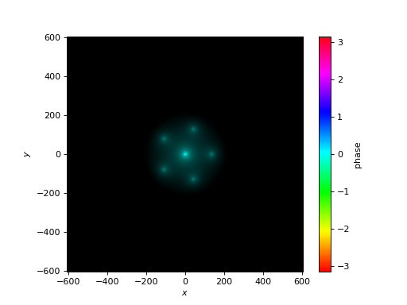
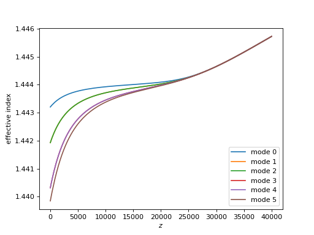
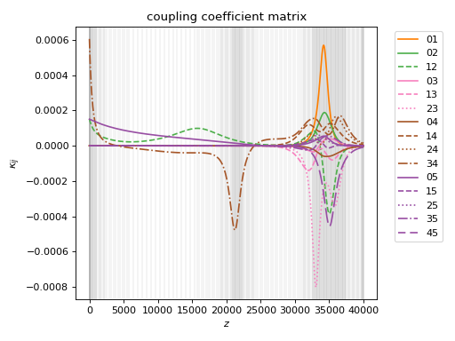
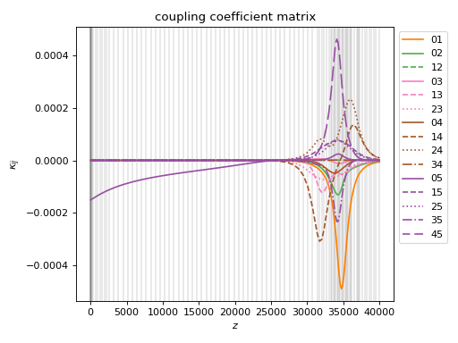
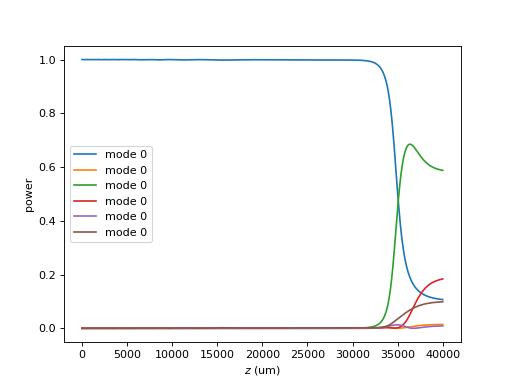

2. 6-port photonic lantern#
The photonic lantern is a tapered waveguide that looks like a normal step-index optical fiber on one end, and a multicore fiber (or similarly, a bundle of single-mode fibers) at the other end. In this section we’ll use cbeam to simulate the propagation through a 6-port photonic lantern.
First, let’s construct the lantern, using the PhotonicLantern class:
from cbeam.waveguide import PhotonicLantern
import numpy as np
wl = 1.55 # wavelength, um
taper_factor = 8. # relative scale factor between frontside and backside waveguide geometry
rcore = 2.2/taper_factor # radius of tapered-down single-mode cores at frontside (small end), um
rclad = 10 # radius of cladding-jacket interface at frontside, um
rjack = 30 # radius of outer jacket boundary at frontside, um
z_ex = 40000 # lantern length, um
nclad = 1.444 # cladding refractive index
ncore = nclad + 8.8e-3 # SM core refractive index
njack = nclad - 5.5e-3 # jacket (low-index capillary) refractive index
t = 2*np.pi/5
core_offset = rclad*2/3 # offset of outer ring of cores from center
# initial core positions. the first core is at (0,0) and the other 5 form a pentagon at a distance <core_offset> from the center
core_pos = np.array([[0,0]] + [[core_offset*np.cos(i*t),core_offset*np.sin(i*t)] for i in range(5)])
# we'll leave the optional args at their defaults
# below is actually equivalent to TestPhotonicLantern
lant = PhotonicLantern(core_pos,[rcore]*6,rclad,rjack,[ncore]*6,nclad,njack,z_ex,taper_factor)
2.1. solving at \(z\)#
We can do mode solves at specific \(z\) values as before. Below I plot eigenmode 0 at the halfway point of the lantern.
from cbeam.propagator import Propagator
wavelength = 1.55 # um
PLprop = Propagator(wavelength,lant,6) # 6 modes
PLneff,PLmodes = PLprop.solve_at(z=z_ex/2.)
PLprop.plot_cfield(PLmodes[0],z=z_ex/2.)
(Source code, png, hires.png, pdf)
{kind=link}
{kind=link}

2.2. solving through the waveguide#
We can also characterize the waveguide to get the effective indices and modes as a function of \(z\). For reference, this around 80s on my desktop. Below I also plot the effective indices.
# comment/uncomment below as necessary
PLprop.characterize(save=True,tag="test")
# PLprop.load("test")
PLprop.plot_neffs()
(Source code, png, hires.png, pdf)
{kind=link}
{kind=link}

We see that the eigenmodes are initially divided into 4 groups by effective index. Upon closer inspection, we could determine that modes 1&2 are degenerate, as well as 3&4.
2.3. coupling coefficients#
Let’s also plot the coupling coefficients.
PLprop.plot_coupling_coeffs()
(Source code, png, hires.png, pdf)
{kind=link}
{kind=link}

It looks kind of bumpy! But the bumps are not particularly surprising since we have a lot of mode degeneracy, so our eigenbasis can rotate more or less freely with \(z\). This is fine as long as the bumps are sufficiently well-sampled in \(z\).
2.4. dealing with degenerate modes#
While the above calculation is fine, cbeam provides a way to “fix” a degenerate eigenbasis, which can improve computation speed and accuracy. This involves specifying which modes are degenerate in Propagator.degen_groups:
# modes 1&2 , 3&4 are degenerate
PLprop.degen_groups = [[1,2],[3,4]]
I will run a characterize() again to show how the coupling coefficients change, even though the waveguide and the physics are the same. This takes around 60 s on my desktop.
# comment/uncomment below as necessary
PLprop.characterize(save=True,tag="test_degen")
# PLprop.load("test_degen")
PLprop.plot_coupling_coeffs()
(Source code, png, hires.png, pdf)
{kind=link}
{kind=link}

Comparing this plot with the previous, the coupling coefficients are lower now, as expected.
2.5. extract channel powers#
Degeneracy leaves one last complication. Suppose we want to propagate a field through the lantern and get the output powers in each single mode core. A simple propagation will not give us the information, because the modes at the end of the waveguide might not match the modes we are interested in. The propagation below demonstrates this.
import numpy as np
u0 = [1,0,0,0,0,0] # launch field, LP01
zs,us,uf = PLprop.propagate(u0)
PLprop.plot_mode_powers(zs,us)
(Source code, png, hires.png, pdf)
{kind=link}
{kind=link}

If the output modes of the waveguide corresponded to the modes of each single mode channel, 5 of the modes should share the same power, which we clearly do not see. To properly extract the channel powers, we can use Propagator.to_channel_basis().
# this function takes the phased mode amplitudes uf
amps = PLprop.to_channel_basis(uf)
print(np.power(np.abs(amps),2))
This should give the following channel powers (or close to it):
[0.49571021 0.10056241 0.10044566 0.10044533 0.10054812 0.10055042]